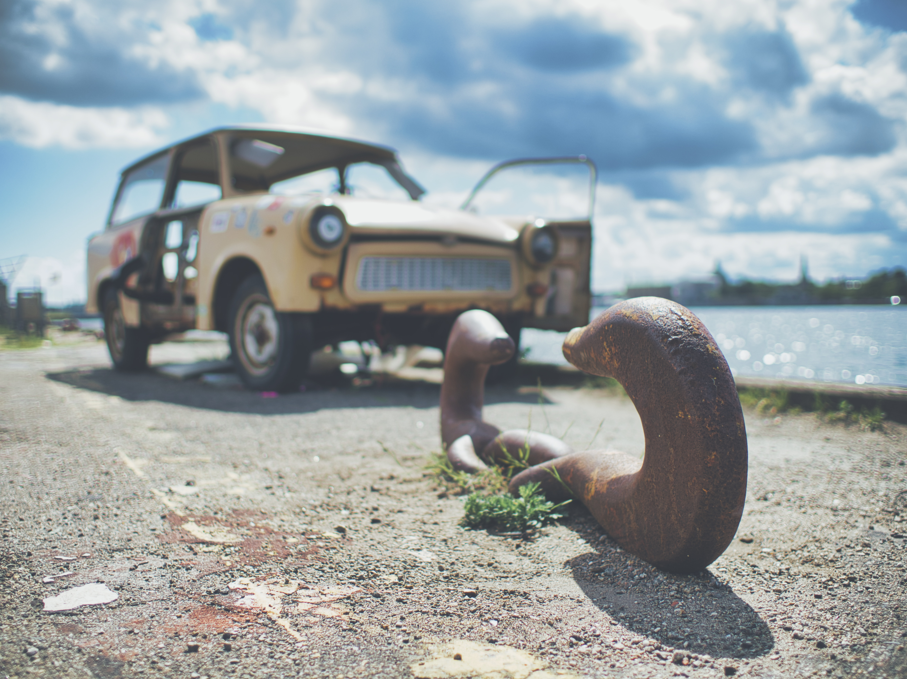

Titel: Københavnerbilleder - en guide til hipster foto
Forfatter: Sten Simons
Antal sider: 344
Forlag: Mellem Linjerne
ISBN: 987-6-987654-32-1
Pris: 399.-
Kort om bogen
Københavnerbilleder er de danske streetfotografers bibel: Det er en
fusion mellem et kunstværk og en lærebog. Bogen gennemgår alle
væsentlige aspekter af streetfotografering fra grundlæggende teknik
til kreative eksperimenter. Alt sammen krydret med masser af
inspirerende fotos. God læselyst!
Kapitler
Kapitel 1 - Intro til street foto
Hvad er street foto? Det handler i bund og grund om at skyde byens
liv og byens geometri (urban geometry). I dette kapitel får du en
grundig intro til hvad street foto er og et overblik over nogen af
de kendte street-fotografer. Alt krydret med en masse gode eksempler
på street fotos.
Kapitel 2 - Om at skyde street
Vil du skyde street? Så er der ikke nogen vej udenom: Du skal ud på
gaderne og prøve det! I dette kapitel får du en teknisk indføring i
hvordan du bedst skyder street. Uanset om du er begynder eller
professionel, er der mange gode tekniske tips og tricks til
street-skyderiet.
Kapitel 3 - Om at finde det rette motiv
Indimellem er man heldig, andre gange kommer man hjem helt uden gode
motiver. Med et par tips og tricks til at finde de rette motiver,
stiger chancen gevaldigt for at fange de gode motiver.
Kapitel 4 - Digital street foto
De fleste af os skyder oftest digitalt fordi det er billigere og
nemmere. Og nogen teknikker og fremgangsmåder egner sig kun til
digital street foto. I dette kapitel får du en række tips og tricks
til digital street-foto.
Kapitel 5 - Analog street foto
Analog er sejt fordi det er mere “ægte,” dyrere og mere besværligt
end digital. Det signalerer entusiasme. Nogle teknikker og
fremgangsmåder egner sig bedst til analog street foto. I dette
kapitel får du en række tips og tricks til analog street-foto.
Kapitel 6 - Om at skyde sort/hvid
Alle street-fotografer skyder sort/hvid nu og da. Nogen altid.
Hvorfor? Hvad er der specielt ved sort/hvid fotografering, og hvad
adskiller sort/hvid fra farvefotografering? Her får du en række tips
og tricks til sort/hvid fotografering.
Kapitel 7 - Kreative teknikker
Dobbelteksponeringer, ICM (intentional camera moves), smadrede
objektiver, gamle filmruller og alle mulige andre, spændende
kreative teknikker kan løfte dine fotografier fra at være kedelige
dokumentationer af hverdagen til at blive vilde kunststykker. Så dyk
ned i dette kapitel om eksperimenterende teknikker!
Kapitel 8 - Kom helt tæt på!
Street foto handler om at fotografere livet på gaden - men tør du at
gå helt tæt på fremmede mennesker og knipse løs? Du kan lige så godt
øve dig, for det er det der vil gøre dig til en bedre
street-fotograf…
Anmeldelser
5 af 6 stjerner
Københavnerbilleder er en grundig introduktion til at skyde billeder
med retro-kant. Hvad enten du er har arbejdet med foto siden
135-filmen kom på markedet, du kun har skudt digitalt eller er helt
nybegynder, er der masser af tips og tricks i bogen.
- Hanne Hovgaard, Berlingeren
4 af 5 stjerner
Teksten er underholdende, og billederne er sku' flotte. Hvad mere
skal man sige om en fotobog?
- Kim Kloggaard, Fotojournalen.dk
6 af 6 stjerner
Sten Simons kan det der - og han bliver bedre og bedre. Stens tredje
fotobog er klart den bedste - her er han for alvor i sit rette
element, meget bedre end “studiefotografering som begyndere.”
Tillykke - godt arbejde.
- Volmer Hansen, Lukkertiden.dk
Billeder fra bogen

Forfatteren
Sten Simons har en lang foto-karriere bag sig. Det hele startede i
00'erne, da han gik rundt i Pisserenden for at fotografere
ungdommens forfald. Det ledte til en række udstillinger, og blev
senere til hans først fotobog “Ungdomsdruk - pinlige billeder fra
nattelivet.” Derefter tog karrieren fart: Han blev fotojournalist og
dokumenterede en masse dagligdagsstof fra Amager på dagbladet
“Amagerkaneren.” Sideløbende begyndte han at undervise i foto, og
har skrevet et utal af bøger, herunder bestsellerne Scener fra
S-toget, Brun mad - en visuel odysse, og lærebogen Fotografering for
evnesvage.